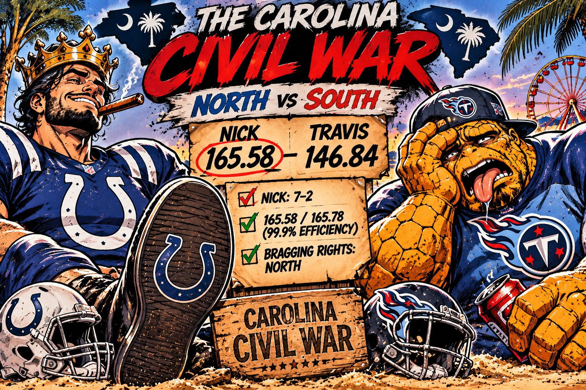

THE SOUTH SHALL RISE AGAIN. JUST AS SOON AS TRAVIS GETS HIS HEAD OUT OF HIS ASS.
THE CAROLINA CIVIL WAR: THE NORTH TAKES THE VICTORY. THE SOUTH TAKES ANOTHER FUCKING L.

The Carolina Civil War has officially claimed another victim, and unfortunately for South Carolina, it's their own fucking general. Nick defeated Travis 165.58 to 146.84, sending the Myrtle Beach militia home with an 18.74-point loss and another reason to hate everybody north of the state line. Two former West Virginia boys moved to the Carolinas looking for a better life. One found a beautiful home near Lake Norman. The other apparently relocated to be closer to his next disappointment.
Here's what makes this beating particularly insulting: Nick scored 165.58 out of a possible 165.78 points from his optimal lineup. That's 99.9% lineup efficiency, the best coaching performance of Week 9. The son of a bitch left just 20 cents on the table. Meanwhile, Travis put up a respectable 146.84, but respectable doesn't mean shit when the other guy practically submitted a perfect lineup. Nick didn't just win. He eliminated almost every opportunity to blame the coaching.
And the bigger picture isn't helping Travis. Nick is now 7–2, tied for the league lead in wins. Nick's a Colts fan, Travis supports the Titans, and somehow both have managed to bring that same questionable judgment into adulthood. But credit where it's due: Nick's lineup management this week was damn near flawless.
THE FINAL WORD: The North takes the bragging rights, Travis takes the long drive back to Myrtle Beach, and the South is once again promising a glorious comeback. At this point, Southern reconstruction has a better fucking timeline than Travis's revenge tour.